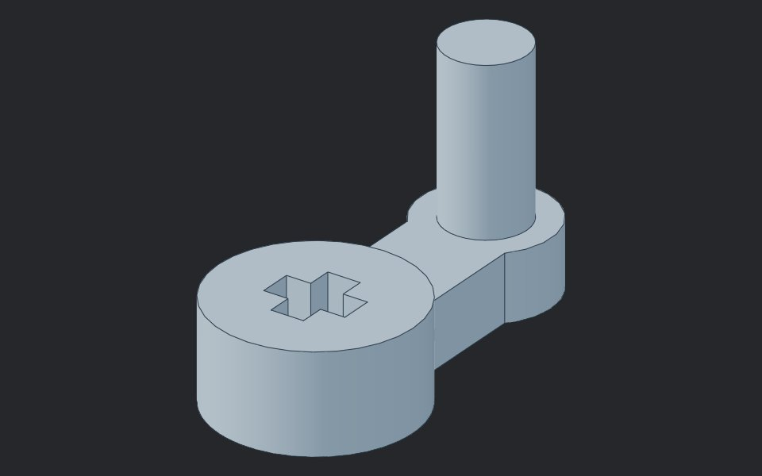
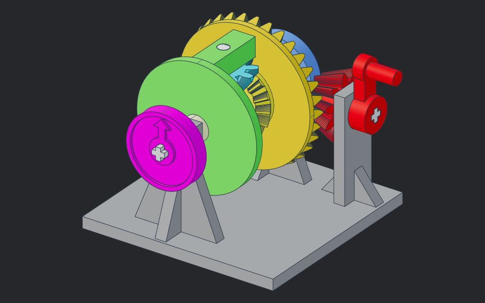

差速器 FreeCAD 檔案
曲柄是參數化零件，改試算表的數字就能改尺寸；組合檔把曲柄連結進來，和其他零件一起顯示完整的差速器。

差速器組合圖differential_assembly.FCStd
- 16 個零件來自 text-to-cad 的組合 STEP
- 曲柄用 App::Link 連結
crank.FCStd，改零件圖組合圖會跟著更新
怎麼開啟
- 安裝免費的 FreeCAD（1.1 版以上）。
- 把兩個
.FCStd放在同一個資料夾（解壓 ZIP 即可）。 - 開啟
differential_assembly.FCStd，曲柄會自動從crank.FCStd載入。 - 要改曲柄：開
crank.FCStd→ 雙擊Params試算表 → 改數值 → 按 Ctrl+R 重算並存檔，回到組合圖就會更新。
曲柄參數（Params 試算表）
| 別名 Alias | 說明 | 數值 (mm) |
|---|---|---|
crank_r | 曲柄半徑（輪轂中心到握把中心） | 15 |
hub_d | 輪轂外徑 | 12 |
hub_h | 輪轂高度（要和差速器模型一致） | 6 |
arm_w | 曲柄臂寬 | 6 |
arm_t | 曲柄臂厚 | 4 |
boss_d | 握把底座外徑 | 8 |
handle_d | 握把直徑 | 5 |
handle_h | 握把高度 | 14 |
axle_d | LEGO 十字軸外徑 | 4.8 |
axle_arm | LEGO 十字軸臂寬 | 1.8 |
lego_clear | 十字孔每邊間隙 | 0.1 |
曲柄半徑 15 mm 是轉一整圈都不會撞到底座肋的尺寸（18 mm 會撞到前方立柱的肋）。